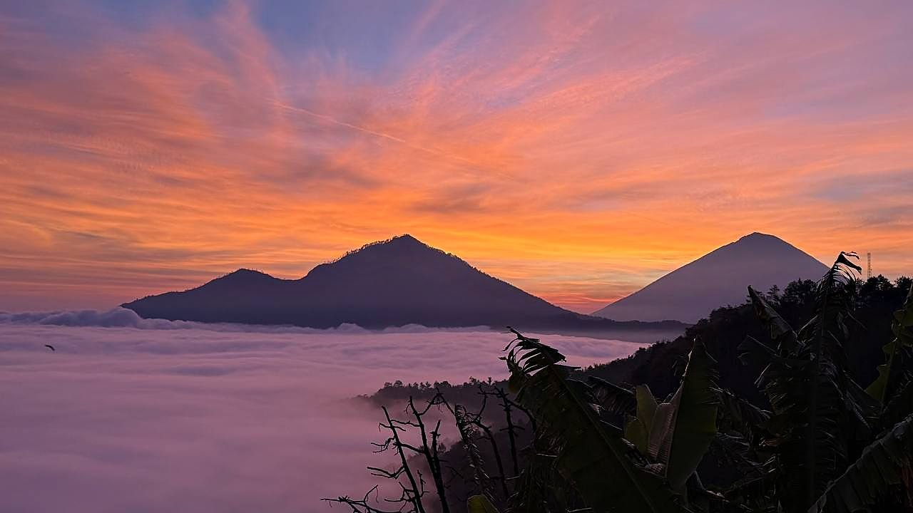
Kintamani at sunrise
The volcano at first light, and breakfast on the rim of the caldera.
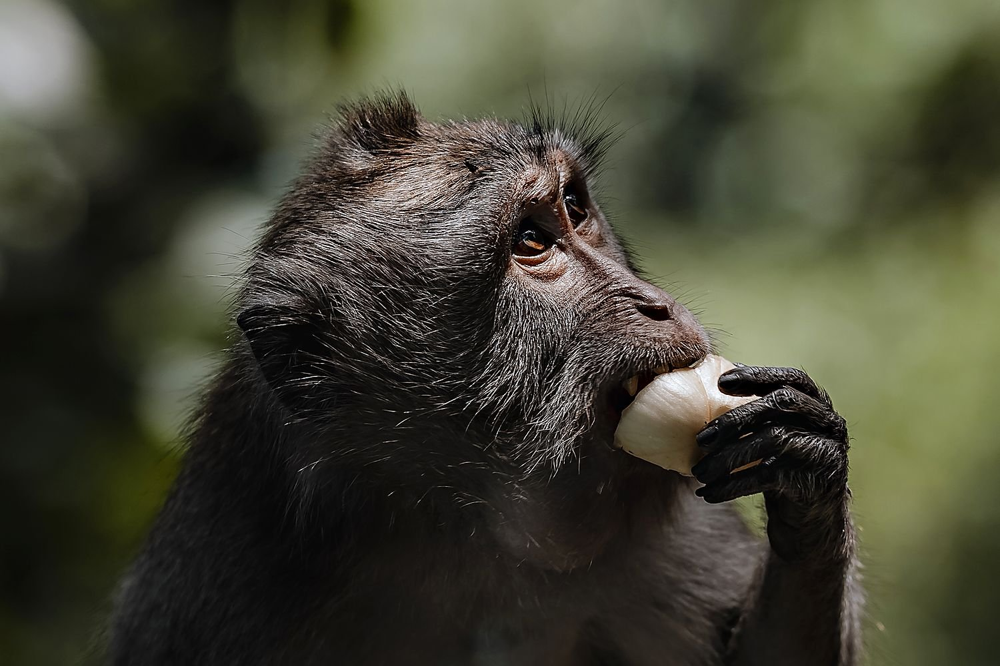
Not a rack of brochures from an agency down the road. Our drivers, our chefs, our guides. Booked at reception the day before.

The volcano at first light, and breakfast on the rim of the caldera.
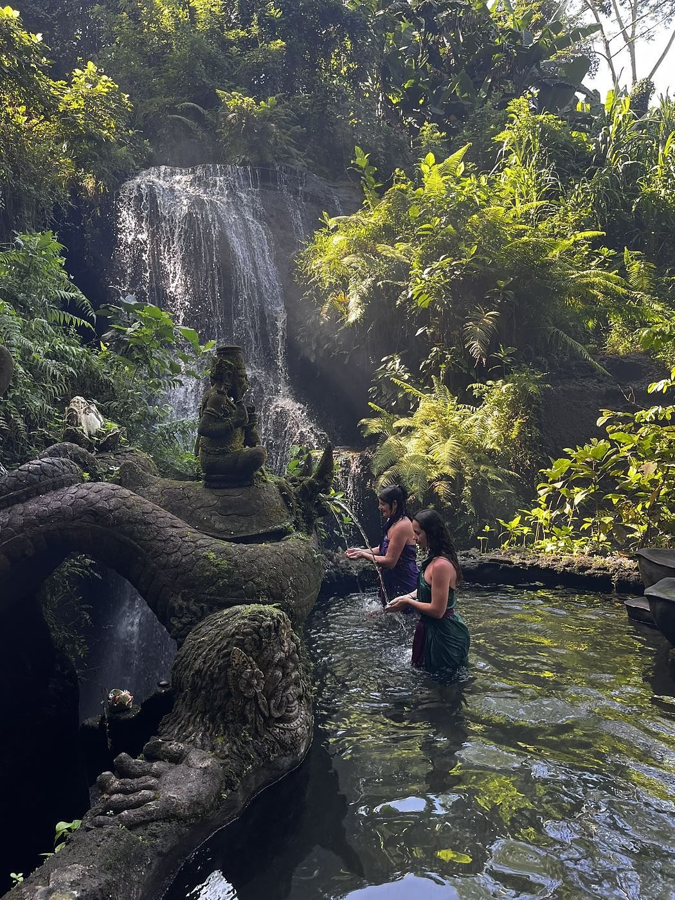
The Balinese cleansing ritual at a waterfall temple, a short drive west.
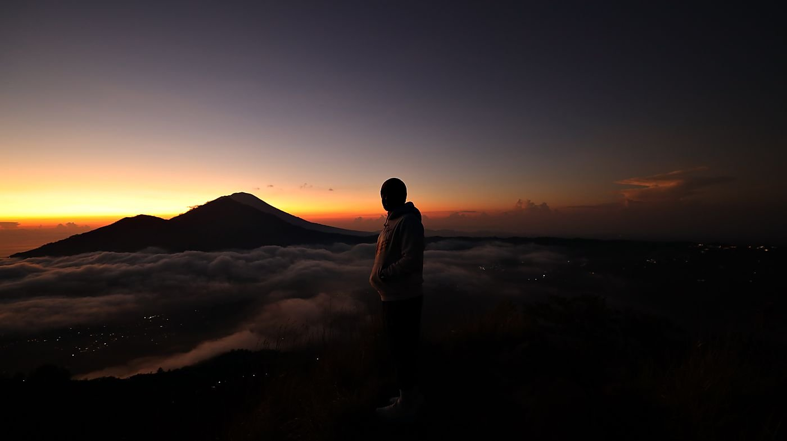
Three hours up a volcano in the dark, to stand on top when the sun arrives.
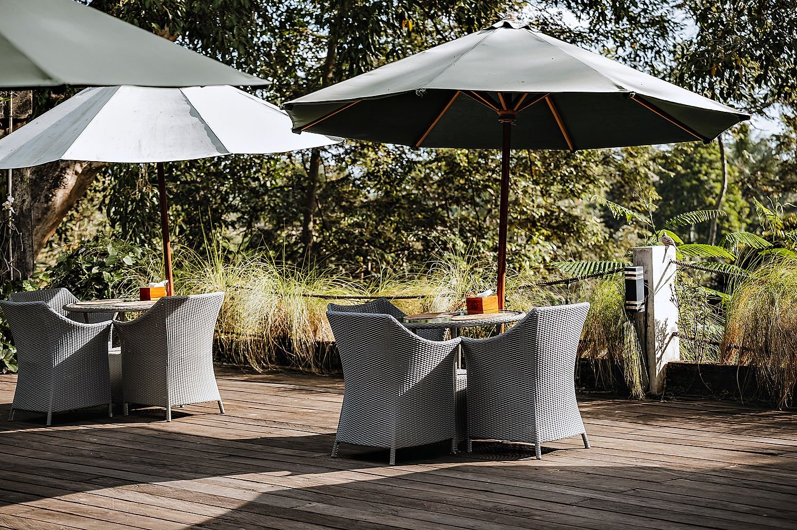
Our own chefs, our own menu, and you at the counter: a main course and a dessert.
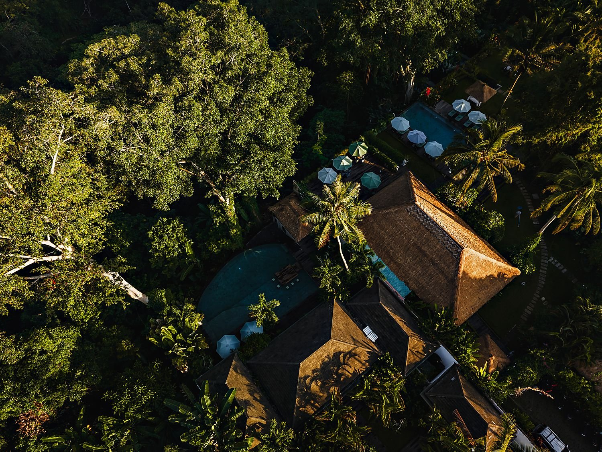
The island across the water, with a villa waiting on the other side.
A car, a driver and an early start: about five hours all in, including the drive both ways and breakfast on the caldera rim, where a row of restaurants faces Mount Batur across the lake. Your driver knows which one is good today, but the choice is yours.
Ask at reception a day ahead. Price on request.
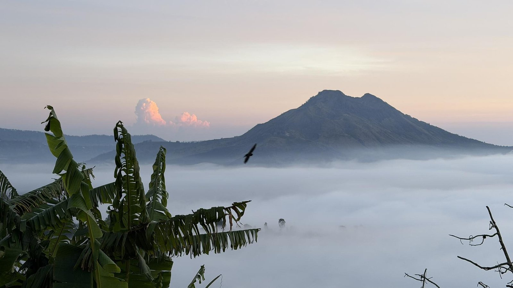
By six the cloud has filled the caldera like a second lake, and the volcano stands in it up to its shoulders.
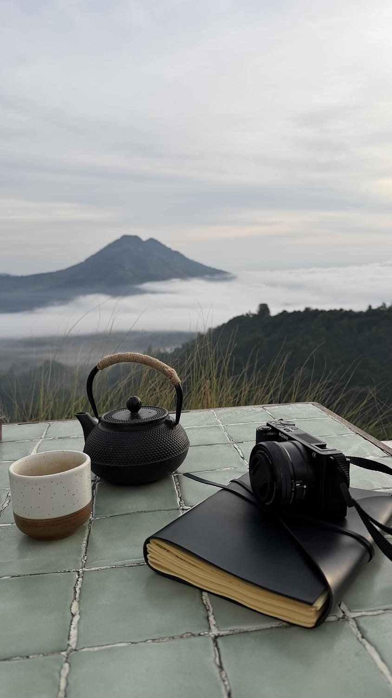
The restaurants along the rim open early for exactly this: a pot of tea, the lake somewhere under the cloud, Batur across the water. You sit until the mist lifts, and then the drive home is downhill all the way.
Melukat is the Balinese purification ritual: water, offerings and intention, in a sequence that has not changed in centuries. We hold ours at Taman Beji Griya, a waterfall temple a short drive west of the resort.
Our own driver takes you there, and a guide leads you through every step of the cleansing and takes the photographs, so the water is all you have to think about. Ask at reception a day ahead.
Tirta Empul, the spring temple to the north, is a visit of its own: read about it here.
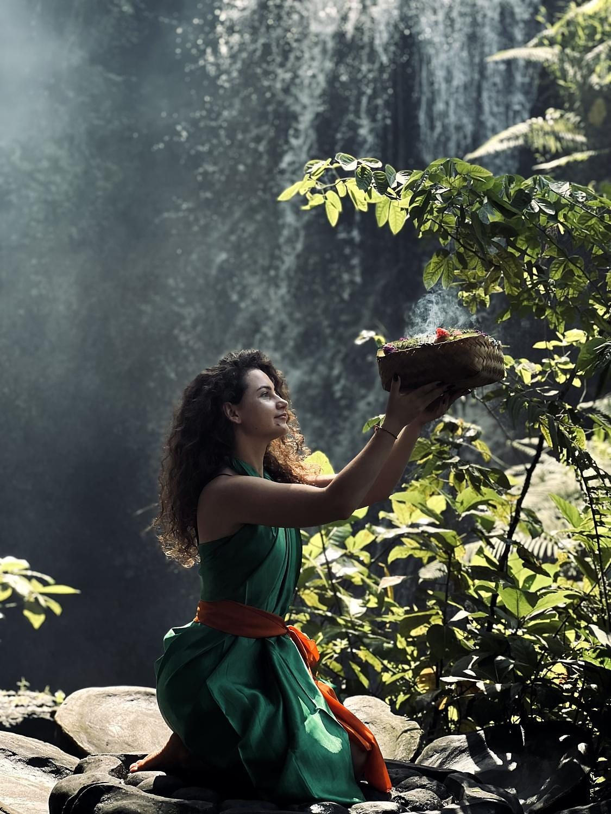
You come dressed in a sarong and sash, and the prayers and the offerings come first, at the shrine and at the foot of the fall. The water comes last: you stand under it until the guide says you are done. What the water does after that is yours.
A car leaves the resort around 2:30 and meets your guide at the foot of the volcano at 3:30. The climb takes about three hours over loose volcanic scree, timed so that you are standing on the rim when the sun comes up. An hour and a half back down, the car waiting, then breakfast on the caldera rim. You are back at the resort by early afternoon.
Ask at reception a day ahead. Price on request.
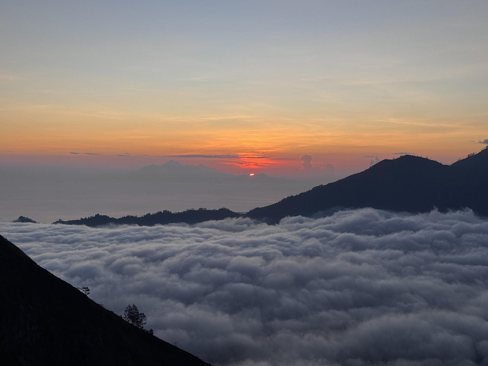
Three hours in the dark for this: the caldera under cloud, Agung on your right, and on a clear morning, Rinjani on Lombok, an island away.
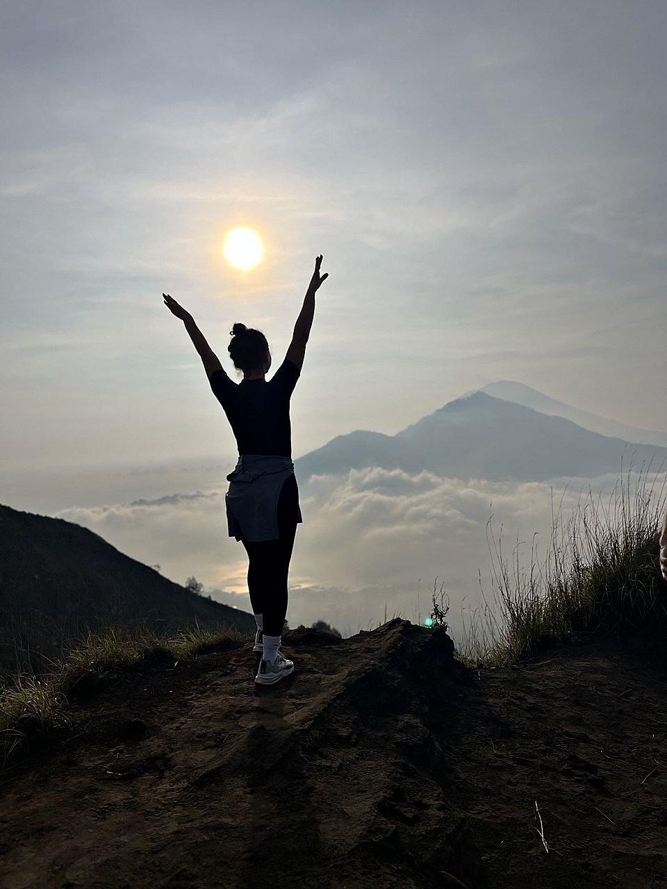
This is the moment the whole climb is for: the sun clearing the horizon, the cloud lying in the caldera like a floor, Agung standing behind it. Then the warm breakfast, the scree, and the car at the bottom.
Our own chefs teach the traditional Indonesian dishes from their menu: a main course and a dessert, made by your hands. An hour to an hour and a half, up to eight guests at the counter, and children are welcome.
IDR 400,000 per adult, 300,000 per child. A scheduled class runs every Monday at 11:30. Just put your name down. A private class gathers at any hour, on any day, for three people or more. Book at reception or by WhatsApp.
Our partners will be glad to host you in one of the most beautiful villas on Nusa Penida, for a night or several. The boat, the transfers and the day itself are arranged around you; our front desk works out the details with you directly.
Ask at reception, and allow a little time to plan it properly.
There were kings, temples and bronze workshops here a thousand years before anyone had heard of Ubud. You can walk to some of it.
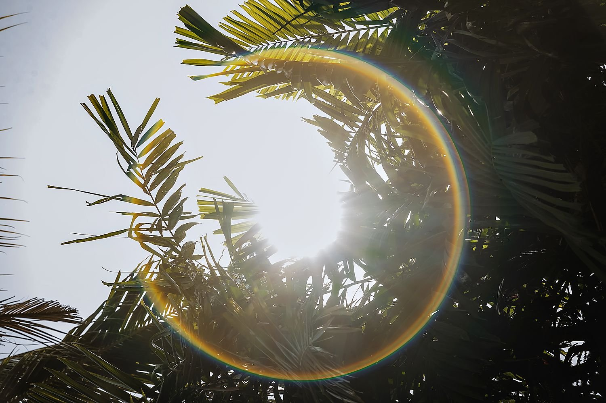
Down through the gardens to the water, with the story of the river the Balinese still call cursed.

The spring temple where Balinese families have bathed for a thousand years.
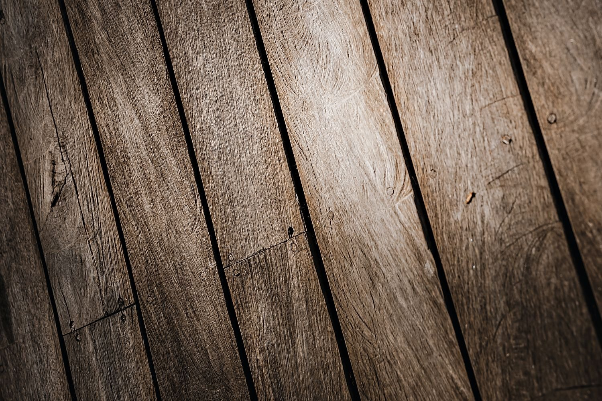
Seven-metre shrines cut into the rock face, down a staircase through the rice.
The largest bronze drum in the world, in a village pavilion five minutes from here.
Pejeng Kawan is a working village, not a set: offerings on the doorsteps, temple mornings, everyday life at the gate.
All about the valleyAsk anything about the resort: rooms, the spa, breakfast, children, the stairs, how to get here. Write in your own language and we will answer in it.
The concierge cannot see free dates or make a booking. For that, use the booking page or WhatsApp.